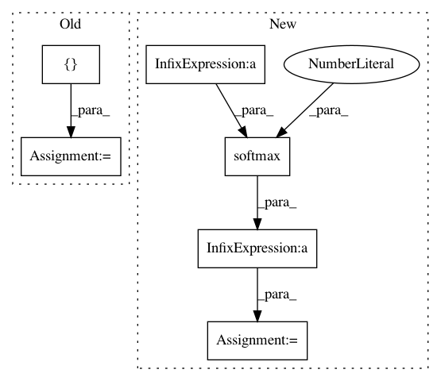

2a11d3f0bad2430b81628fa6cb0a6301d099d77d,performer/fast_attention/tensorflow/fast_attention_test.py,TransformerLayersTest,test_softmax_noncausal_attention_block_output,#TransformerLayersTest#,53
Before Change
num_heads = 1
dim = 4
num_random_features = 350
query = tf.ones([batch_size, length, num_heads, dim])
key = tf.ones([batch_size, length, num_heads, dim])
value = tf.ones([batch_size, length, num_heads, dim])
kernel_transformation = fast_attention.softmax_kernel_transformation
projection_matrix = fast_attention.create_projection_matrix(
After Change
attention_block_output = fast_attention.favor_attention(
query, key, value, kernel_transformation, False, projection_matrix)
query = tf.multiply(query, 1.0 / math.sqrt(float(dim)))
attention_scores = tf.einsum("BXHD,BYHD->BXYH", query, key)
attention_scores = tf.nn.softmax(attention_scores, axis=2)
exact_attention_block_output = tf.einsum("BXYH,BYHD->BXHD",
attention_scores, value)
max_error = 2.0
error = tf.math.abs(
(exact_attention_block_output - attention_block_output) /
exact_attention_block_output)
self.assertLess(tf.math.reduce_max(tf.math.abs(error)), max_error)
def test_fast_attention(self):
hidden_size = 64
In pattern: SUPERPATTERN
Frequency: 3
Non-data size: 6
Instances
Project Name: google-research/google-research
Commit Name: 2a11d3f0bad2430b81628fa6cb0a6301d099d77d
Time: 2020-12-11
Author: xingyousong@google.com
File Name: performer/fast_attention/tensorflow/fast_attention_test.py
Class Name: TransformerLayersTest
Method Name: test_softmax_noncausal_attention_block_output
Project Name: SPFlow/SPFlow
Commit Name: e83c4ba2424b141f626e8fc911286b7996649c62
Time: 2018-07-16
Author: stelzner@cs.tu-darmstadt.de
File Name: src/spn/experiments/RandomSPNs/train_mnist.py
Class Name:
Method Name:
Project Name: SPFlow/SPFlow
Commit Name: 6bc6978ad31c2adda4540f059340dc61ce4fde3c
Time: 2018-09-11
Author: stelzner@cs.tu-darmstadt.de
File Name: src/spn/experiments/RandomSPNs/train_mnist.py
Class Name:
Method Name: